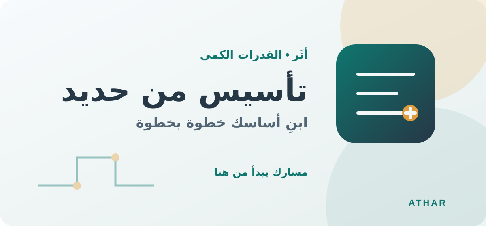
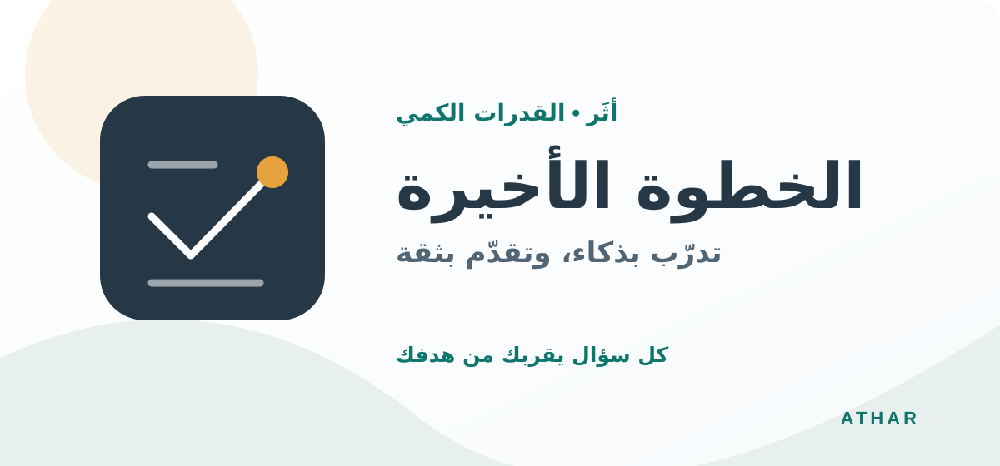

01
المرحلة الأولىتأسيس
تأسيس من حديدلبناء قاعدة متينة في المفاهيم الرياضية والمهارات الأساسية قبل حل الأسئلة المتقدمة.
- مراجعة المفاهيم الأساسية
- التدرّب على خطوات الحل
- تحديد المهارات التي تحتاج إلى مراجعة
اختر المرحلة المناسبة لك في الاستعداد لاختبار القدرات الكمي. محتوى الدروس الفعلي سيُضاف عند تجهيز المواد التعليمية.

لبناء قاعدة متينة في المفاهيم الرياضية والمهارات الأساسية قبل حل الأسئلة المتقدمة.

للتطبيق على أنواع الأسئلة وتنظيم وقت الحل والاستعداد للاختبار بثقة.